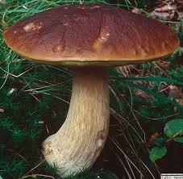

Borowik Szlachetny
Borowik szlachetny, znany też jako prawdziwek (Boletus edulis), jest jednym z najbardziej cenionych grzybów jadalnych. Ma charakterystyczny wygląd, który sprawia, że jest dość łatwy do rozpoznania.